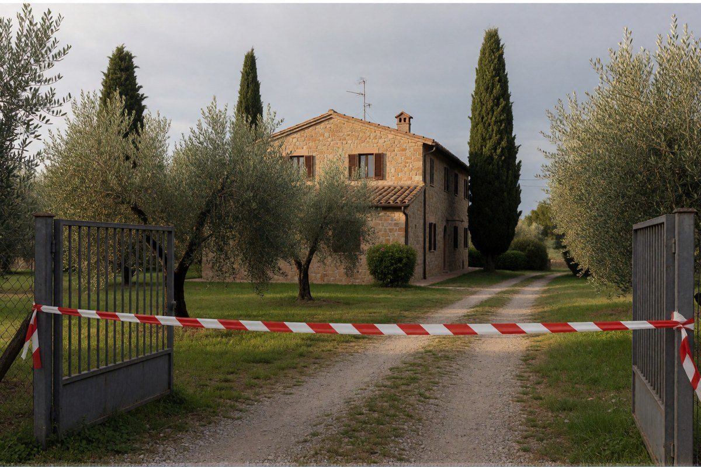

Cronaca · 22 novembre 2026
De Gennaro, sequestro e rilievi nella casa di Montiano

I magistrati hanno messo sotto sequestro la casa di campagna in Maremma dove è morto l'ex capo della Polizia. Il Ris e la Scientifica hanno lavorato fino a tarda sera, la salma è a Firenze per l'autopsia: l'obiettivo è escludere ogni dubbio.
di Franco Zanghì
La casa di campagna in Maremma dove è morto Gianni De Gennaro, ex capo della Polizia, è sotto sequestro. Lo hanno disposto i magistrati per completare gli accertamenti, come riferisce l'ANSA. L'edificio è piantonato dai carabinieri e dentro non c'è nessuno.
Siamo a Montiano, frazione di Magliano in Toscana, in provincia di Grosseto. Sull'estensione del sequestro le fonti non dicono la stessa cosa: l'ANSA scrive che la villa resta sotto sequestro, mentre l'AGI e BlogSicilia precisano che il provvedimento riguarda la dependance, e che l'abitazione principale è rimasta nella disponibilità della famiglia.
Il fascicolo è della Procura di Grosseto, aperto contro ignoti per istigazione al suicidio, e il lavoro è coordinato con la Direzione distrettuale antimafia di Firenze. De Gennaro aveva 78 anni ed era indagato dalla Procura di Caltanissetta per depistaggio sulla strage di via D'Amelio: indagato, non condannato.
Dieci ore di rilievi
Sabato sono arrivati da Roma gli investigatori del Ris dei carabinieri e della Polizia scientifica. Hanno lavorato fino alla tarda serata, cercando tracce biologiche e impronte digitali.
Lo scopo è uno solo: ricostruire la dinamica ed escludere che in quelle ore ci fosse qualcun altro. Per la stessa ragione, scrive l'ANSA, gli inquirenti acquisiranno le immagini delle telecamere della zona, per verificare se nelle ore precedenti siano passate altre auto.
Il corpo, riferisce BlogSicilia, è stato trovato dal custode del podere. I familiari avevano dato l'allarme la mattina di sabato, non riuscendo più a raggiungerlo al telefono.
I biglietti e le buste sigillate
Nella casa è stato trovato un manoscritto indirizzato ai familiari e al custode del podere, che secondo l'ANSA contiene indicazioni di tipo organizzativo. Sky TG24 riferisce che i biglietti erano per la moglie e per i figli.
Su questo punto la prima ricostruzione era diversa. Il Corriere della Sera, sabato, aveva scritto che non era stato trovato nessun biglietto; le notizie arrivate in serata dicono il contrario, e la correzione è stata fatta anche nei servizi del canale.
In un'altra stanza, sempre secondo il Corriere ripreso dall'ANSA, sono state trovate alcune buste sigillate, che adesso sono a disposizione dell'autorità giudiziaria di Firenze. Non è ancora chiaro se abbiano un legame con l'inchiesta.
Le carte e i telefoni
Accanto ai biglietti ci sono i documenti. Secondo l'ANSA, De Gennaro avrebbe portato con sé in Maremma gli atti dei pubblici ministeri di Caltanissetta, in particolare la richiesta di arresto respinta dal giudice per le indagini preliminari e il decreto di perquisizione del 12 novembre. La Repubblica scrive che sono stati sequestrati scritti a mano e un hard disk; il Ros ne ha acquisito un altro, che era nella disponibilità di uno dei figli.
Sono stati sequestrati anche i telefoni. Saranno esaminati per ricostruire gli ultimi contatti e gli eventuali messaggi delle ore in cui l'ex prefetto è rimasto solo. Prima di partire da Roma, racconta l'ANSA, aveva detto alla moglie che andava in campagna a leggere le carte.
La salma è stata trasferita nelle prime ore di domenica dall'ospedale di Grosseto all'istituto di medicina legale di Careggi, a Firenze. L'autopsia non ha ancora una data: l'ANSA la colloca forse nei primi giorni della prossima settimana, mentre la Gazzetta del Sud e l'AGI scrivono che le due procure devono ancora fissarla.
Quello che resta alla famiglia
Il Tribunale del Riesame di Caltanissetta dovrà decidere il 1° dicembre sul ricorso dei pubblici ministeri. Quella è la sede in cui si pesano le accuse, e non è chiusa dalla morte di un indagato.
Sul resto conviene fermarsi. I biglietti appartengono alla sua famiglia, e quello che c'è scritto deve restare dove è. I documenti, invece, sono nelle mani degli investigatori, e la domanda è una sola: sapremo aspettare che parlino gli atti, senza aprire sui giornali un altro processo?
Fonti
- ANSA, «La casa di De Gennaro in Maremma sotto sequestro, proseguono gli accertamenti», 22 novembre 2026
- ANSA, «I telefoni e gli appunti, i pm sulle tracce lasciate da De Gennaro», 22 novembre 2026
- AGI, «De Gennaro, sequestrata la dependance della villa in Maremma», 22 novembre 2026
- BlogSicilia, «Morte De Gennaro, l'antimafia si spacca tra pietas e sospetti. Due procure al lavoro tra Grosseto e Caltanissetta», 22 novembre 2026
- Il Giunco, «Morte di Gianni De Gennaro, autopsia a Careggi. Sotto sequestro la dépendance», 22 novembre 2026
- Gazzetta del Sud, «Morte di De Gennaro, sequestrata la casa in Maremma: rilievi di Ris e Scientifica fino a tarda sera», 22 novembre 2026
- Sky TG24, la Repubblica e Adnkronos, ricostruzioni del 21 e 22 novembre 2026
Le fonti non concordano sull'estensione del sequestro: l'ANSA scrive che la villa resta sotto sequestro, l'AGI e BlogSicilia che il provvedimento riguarda la dependance. Entrambe le versioni sono riportate con l'attribuzione. Gli accertamenti erano in corso alla data di pubblicazione e la data dell'autopsia non era ancora fissata. Gianni De Gennaro era indagato e non condannato, e per lui valeva la presunzione d'innocenza. In questo articolo non sono riportati dettagli sulle modalità materiali della morte. Se stai attraversando un momento difficile, non restare da solo: il Telefono Amico Italia risponde al numero 02 2327 2327.